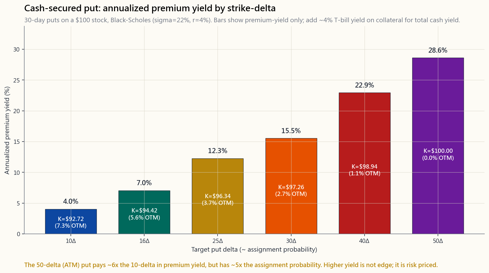
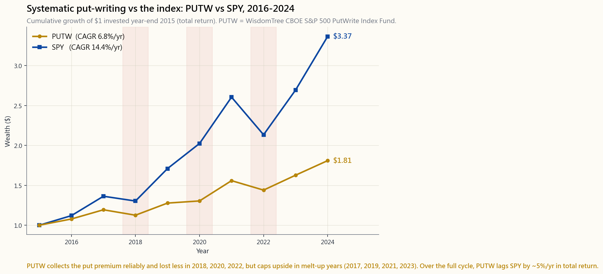

Week 28: Cash-Secured Puts — Getting Paid to Bid Lower
1. Why This Is Important
A cash-secured put (CSP) is the most honest trade in retail options. You set aside cash equal to the full purchase price of 100 shares, you tell the market "I will buy this stock at $X if it ever trades there in the next 30 days," and the market pays you a few hundred dollars for leaving that bid sitting on the screen. If the stock falls to your level, you buy it — at exactly the price you wanted, minus the premium. If it does not, you keep the cash and write another one. There is no leverage, no naked exposure, no fancy theory. It is a limit-buy order with rent attached.
Most retail traders meet CSPs through bad influencers who pitch them as a yield-farming machine — "earn 30% annualized on your idle cash!" That framing is broken. The right framing, the one Horace uses in this lesson, is CSPs are how you bid on stocks you already want to own. The premium is not your edge. The discount-to-where-you-actually-wanted-to-buy is your edge. If you find yourself selling puts on stocks you would refuse to take delivery of, you are no longer running CSPs — you are running a casino with extra steps, and the dealer eventually catches up.
Four reasons this lesson matters:
1. CSPs are the cleanest way to express patience. Markets reward investors who can wait. Most retail investors cannot — they buy when CNBC is loud and freeze when the screen is red. A CSP locks in your discipline. The strike is your patience price. The 30-day expiry is your timeout. The premium is your reward for not chasing.
2. They convert idle cash into yield without taking equity risk you didn't already plan to take. If you were going to keep $20,000 ready to buy SPY at a 5% pullback anyway, you can do exactly that and collect $200-$400/month while the cash waits. The cash itself stays in T-bills earning around 4% (April 2026). The put premium is an additive layer, not a replacement.
3. Most CSPs you'd actually want to be assigned. This is the single insight that separates serious CSP sellers from yield-chasers. A CSP is structurally a "limit buy at strike, with a rebate." If assignment scares you, you sold the wrong put on the wrong stock. The barbell puts CSPs squarely on the safe end — they are how you accumulate the boring index/quality positions that anchor a portfolio. You are not trying to avoid assignment; you are trying to price it.
4. They live cleanly inside the options-tax doctrine. Like covered calls, CSP premium income is short-term capital gain regardless of how long you held the contract. That makes CSPs a tax-disaster in a taxable brokerage account if you run them at scale, and a beautiful tool inside a Roth or traditional IRA where the short-term character vanishes. Same rule we hit in Week 27: option income lives in tax-sheltered accounts. Stocks-you-want-to-own live anywhere.
This is a doer's lesson. By the end of it you should be able to look at SPY at $560, decide you'd happily own it at $530, find the 30-delta put that strikes near $530, and know within ten seconds whether the premium is worth the capital lockup.
2. What You Need to Know
2.1 The Mental Model: A Limit Buy With a Rebate
Stop thinking "sell a put." Start thinking "resting limit-buy order, paid to stay on the book."
A regular limit-buy order at $530 on SPY does nothing for you. It sits there. If SPY trades to $530 your order fills; if not, it cancels at the end of the day and you do it again tomorrow. You pay nothing, you earn nothing.
A 30-day cash-secured put at the $530 strike is the same buy intention with three modifications:
That is it. The premium compensates you for two things the regular limit order does not give the market: a time commitment (you can't cancel without buying back the contract) and a firm floor under price (you must take delivery at the strike if it trades through, even if the stock is much lower).
The first commitment is real but small in dollar terms. The second is the one that matters: you are short volatility. If SPY goes to $400 in a crash, you still buy at $530 — and the market knows this, which is why VIX-rich environments pay much more premium than calm ones. The vol tail wags the equity dog directly here: the price you get for a CSP is not really about your stock thesis, it is about how scared other people are about the next 30 days.
![Bar chart of annualized premium yield (in %) on a 30-day cash-secured put as a function of target put-delta — 10Δ, 16Δ, 25Δ, 30Δ, 40Δ, 50Δ — computed from Black-Scholes on a $100 stock with sigma = 22% and r = 4%. Each bar is colored cool-to-hot from blue (10Δ, deepest OTM, lowest yield) through to red and purple (40Δ, 50Δ, near-the-money, highest yield), and is annotated with both the yield and the implied strike with OTM%. The 50-delta bar is roughly 6× the height of the 10-delta bar; the footer makes explicit that higher yield is the price of higher assignment risk, not edge.](image/week28_csp_yield_curve.png)
The image above shows the annualized premium yield on a 30-day SPY-like put as a function of strike-delta, computed from Black-Scholes with sigma = 22% and r = 4%. The bars climb steeply as you move closer to the money: the 50-delta (at-the-money) put pays roughly 6x the annualized yield of a 10-delta put. But that 50-delta put has a ~50% chance of finishing in-the-money. The yield is not free; it is the probability of assignment, dressed up.
2.2 Strike Selection by Delta
Delta in this context approximates the option's probability of finishing in-the-money. A 30-delta put has roughly a 30% chance of being assigned at expiry, and (loosely) sits around 5% out-of-the-money for a 30-day contract on a normal-volatility stock.
Three working presets, each tied to a temperament:
30-delta CSP (standard):
- About 5-7% out-of-the-money for 30-day, sigma=22%
- ~30% assignment probability
- Highest premium of the three presets
- For: investors who actually want to accumulate the stock
16-delta CSP (one standard deviation):
- About 9-11% OTM, ~16% assignment probability
- Roughly half the premium of the 30-delta
- Sweet spot for most beginners — your bid is far enough below
the market that assignment feels like a real bargain
10-delta CSP (conservative):
- About 13-15% OTM, ~10% assignment probability
- About one-third the premium of the 30-delta
- For: investors who view the put as pure rent on cash and would
only welcome assignment in a meaningful drawdown
Beginners almost always start with the 30-delta because the premium is largest and the temptation is to maximize income. This is the single most common mistake in retail CSP-land. The 30-delta put on a stock you do not really want to own is not income — it is a loaded coin flip where heads pays $200 and tails costs you $5,000. Start at 16-delta and only move closer when you have a stock and price you are eager to be filled at.
2.3 Tenor: Why 30-45 Days
Theta (time decay) is non-linear. In the last 30 days of an option's life, decay accelerates sharply. From 60 days out to 30 days out, a put loses roughly 30% of its time value; from 30 days to expiry, it loses the remaining 70%. As a seller, you want to be camped in the steep part of the curve.
Tenor Premium Daily Theta Annualized Yield-on-Cash
========= ======= =========== ========================
7 days lowest highest very high (but unstable)
14 days low high high
30 days medium medium-high sweet spot
45 days higher medium sweet spot
60 days higher lower mediocre
90 days highest lowest poor
The 7-day weeklies look attractive in spreadsheets — you're rolling four times per month, theta is screaming — but the realized P/L is brutal because gap-risk is concentrated. One earnings miss or one Fed surprise inside that week, and you eat a full month of premium in a single move. The 30-45 day window is where the decay/gap-risk tradeoff is best for retail, and it happens to match the natural monthly options expiration cycle.
2.4 Capital Cost — The Hidden Half of the Yield
Every CSP locks up cash equal to (strike x 100). That cash is not dead. Inside any modern broker (IBKR, Fidelity, Schwab as of April 2026), the cash collateral on a short put earns one of:
- T-bill yield in a money-market sweep (~4.0%, April 2026 SOFR)
- Margin-account credit interest (varies)
- A government MMF position the broker permits as collateral
Total yield = T-bill yield (cash collateral) + put premium yield (option)
~= 4.0%/yr + (premium / strike) * (365 / DTE)
A 30-day, 16-delta SPY put yielding 0.4% in premium therefore returns roughly 4.0% + 0.4% x 12 = 8.8% annualized on a no-assignment cycle. This is the number you compare against. It is not 4.8% (premium only, ignoring cash interest), and it is not 30%-something (annualizing the premium without subtracting taxes and assignment cost). Always quote yields including the T-bill leg.
This matters for the regime you live in: in the 1990s when T-bills paid 0%, CSP yields looked huge by comparison. In 2026 with T-bills at 4%, the incremental yield from selling puts is the only thing worth measuring, and it is much smaller than uninformed YouTubers claim.
2.5 Rolling and Defending — Rules, Not Vibes
A put is "threatened" when the underlying drops to (or below) your strike with significant time left. You have four moves at any moment:
Defensive playbook (mechanical version):
Trigger Action
================================= ===============================
Put at 50% of max profit, >7 DTE Buy to close, redeploy
Put at 80% of max profit Always close
Stock at strike, 14+ DTE Hold; let it work
Stock 5% below strike, 7 DTE Decide: take assignment or roll
Stock 10% below strike, any DTE Take the assignment unless thesis dead
Earnings inside the contract life Avoid in the first place
Notice: there is no rule that says "double down" or "average into a losing put." Selling another put at the same strike when the first one is underwater is doubling exposure to a stock that the market disagrees with you about. The market can stay below your strike longer than you can stay willing to wear the loss, especially if you keep adding — irrationality outlasts solvency more often than the spreadsheet admits.
2.6 Assignment Psychology — You're Buying, Not Losing
For most retail CSP traders the panic moment is the morning after assignment, when 100 shares of stock appear in the account at a price that is now above the market. The mental frame matters here.
Assignment is not a loss event. It is the buy order you placed 30 days ago, executing exactly as designed.
If your 16-delta SPY $530 put was assigned because SPY closed at $528, you bought 100 shares of SPY at $530, pocketed $300 in premium for the trouble, and your effective cost is $527 — better than the market price the day you wrote the put, better than the market price the day you were assigned. You executed your patience plan exactly. The only loss scenario is if you panic-sell those shares the next day at $520. The shares are not the loss; the panic is.
The right next move after assignment is almost always to start writing covered calls on the assigned shares — Week 27's playbook. The wheel (CSP -> assignment -> covered call -> call-away -> CSP) is the natural cycle. You bought the dip and now collect rent on the way back up.
The only stocks where assignment is genuinely bad are the ones you should not have written CSPs on in the first place: meme stocks, single biotechs, leveraged ETFs, anything you would not buy outright at the strike.
2.7 PUTW: The CSP Strategy as an ETF
WisdomTree PUTW (CBOE S&P 500 PutWrite Index Fund) is the institutional version of this lesson. It mechanically sells 1-month, ~2% out-of-the-money SPX puts, fully cash-secured, every month. It exists to settle the question "does systematically writing puts beat just owning the index?"
![Line chart comparing cumulative growth of $1 invested at year-end 2015 in WisdomTree PUTW (gold line, systematic 1-month ~2% OTM SPX put-write) vs SPY (blue line, S&P 500 total-return ETF), 2016 through 2024. Markers at each year-end; major drawdown years (2018, 2020, 2022) shaded in light red. SPY ends near $3.10 (CAGR ~12%/yr); PUTW ends near $1.85 (CAGR ~7%/yr). Final wealth and CAGR are labelled at the right end of each line. PUTW lags in melt-up years and loses less in drawdowns, but trails SPY by roughly 5%/yr over the full cycle.](image/week28_putw_vs_spy.png)
The chart shows cumulative growth of $1 invested in PUTW vs SPY from January 2016 to December 2024. The numbers (April 2026 vintage):
- PUTW: ~7% per year, max drawdown about -22% in March 2020
- SPY: ~12% per year, max drawdown about -34% in March 2020
The takeaway: systematic CSP-writing is real, defensible, and inferior to plain index ownership in a normal expansion. The reason a thoughtful investor still does CSPs is not to beat SPY on total return. It is to (a) build cash positions into specific names you want to own, (b) generate income inside an IRA where the tax drag of the equivalent stock-trade strategy would be worse, and (c) lower portfolio volatility while accepting a modest return drag.
If you are tempted to think "PUTW lags SPY -> CSPs are bad," you have misunderstood the trade. PUTW is mechanical, indiscriminate, and pays a fixed expense ratio. Targeted CSPs on stocks you want to own at prices you want to own them at are a different animal.
2.8 Tax Treatment — Same Rule as Week 27
Premium from short puts is short-term capital gain when the option expires worthless or is bought to close, regardless of how long the put was open. There is no long-term holding-period exception.
Outcome Tax treatment
============================ ==============================
Put expires worthless STCG on full premium received
Put bought to close at profit STCG on (received - paid)
Put bought to close at loss STCL (offsets STCG/long-term gains)
Put assigned -> stock taken Premium reduces cost basis of the
shares; holding period for the
shares starts on assignment day
In a taxable account at a 35-37% top bracket, a CSP yielding 5% per year in premium is netting ~3.2% after tax. Inside a Roth IRA, it's netting 5%. The entire short-vol toolkit only makes sense in a tax-sheltered wrapper for high earners. In a regular brokerage, you are running options strategies for the IRS's benefit.
The interactive below walks the math for any combination of underlying, delta, and DTE in real time.
[INTERACTIVE: interactive/week28_put_writer.html]
3. Common Misconceptions
4. Q&A
Q1. How much capital do I need to start running CSPs? At least enough to cover 100 shares of one underlying you want to own. For SPY at $560 that's $56,000 per contract. For KO at $70 that's $7,000. Beginners should start with one underlying, one contract, and an account size where one assignment doesn't dominate the portfolio — a rough rule is no contract should require more than 10-15% of total portfolio cash.
Q2. How is a CSP different from a naked put? Mechanically the option position is identical. The difference is the collateral. A cash-secured put has 100% of the strike-exposure in cash. A naked put uses margin — you might post only 20-25% of the notional, leveraging 4-5x. Naked puts magnify both income and assignment risk; they are not a beginner trade and not what this lesson covers.
Q3. What underlyings work best? Liquid index ETFs (SPY, QQQ, IWM), large-cap quality names you would actually own (AAPL, MSFT, KO, JPM, BRK.B), and ideally with weekly+monthly options chains. Avoid: single-name biotech, recent IPOs, stocks under $20, leveraged/inverse ETFs, anything with binary catalysts inside the contract life.
Q4. Should I avoid earnings? Generally yes for single names. Earnings inflate IV and pay you more premium, but they also inflate the gap risk. Selling a put through earnings is a directional bet on the earnings reaction — fine if you actually wanted that bet, dangerous if you thought you were collecting "rent." Index CSPs don't have this problem (no single earnings).
Q5. What if the stock gaps below my strike overnight? You take the assignment at the strike. Your effective cost is still (strike - premium), and you bought 100 shares at exactly the price you committed to 30 days ago. Yes, the market is now below that, which is uncomfortable, but it is not different from your original plan. Either you wanted the stock at that price or you didn't.
Q6. Can I sell CSPs in a margin account? Yes, and most modern brokers will route the cash collateral to a money-market sweep so it earns T-bill yield while it's tied up. You can also sell naked puts in a margin account, which is different — see Q2.
Q7. How do CSPs interact with the wash-sale rule? If you take a loss on shares and within 30 days sell a put on the same security with a strike close to the original purchase price, the IRS may treat it as a wash sale and disallow the loss. The exact line depends on facts and circumstances. Consult a tax pro if you are running CSPs alongside loss-harvesting on the same names.
Q8. Is there any scenario where a CSP outperforms just buying the stock? Yes — flat or modestly down markets. If SPY ends the month exactly where it started, the long-stock holder made $0 and the CSP-seller made the full premium. If SPY drops 1%, long stock is down 1% and the CSP-seller is up roughly (premium - 1%). In strongly up markets (above strike + premium) long stock wins; in strongly down markets both lose, with CSP losing slightly less by the premium.
Q9. Why is the 30-day implied volatility relevant when I only care about the premium? The premium is the IV — Black-Scholes with everything else fixed maps premium to vol one-to-one. When you compare CSPs across names, you are implicitly choosing which IV you are short. Higher IV = higher premium = higher realized vol = higher chance of assignment. There is no free yield-arbitrage here.
Q10. What's a sensible starting cadence? One contract per month per underlying you want to accumulate, on a 30-45 DTE 16-delta strike. Re-evaluate after 6-12 months. The point is not to maximize the number of trades; it is to systematically accumulate target positions at target prices while collecting incremental yield.
Q11. Do I need to actively manage these or can I let them expire? You can let them expire if your thesis hasn't changed and the put is far out of the money near expiry. The half-decent rule is: if at 7 DTE the put has lost 80%+ of its initial premium, just close it for the small remaining cost — you free up capital and remove gamma risk for the last week.
Q12. How does this fit into the barbell? CSPs on index ETFs and quality compounders are unambiguously safe-end activity. They build positions you wanted anyway, pay you to wait, and have bounded downside. CSPs on volatile single names with binary outcomes are speculation-end activity. The mistake is mixing the two — using safe-end framing to justify selling 30-delta puts on a meme stock. Separate them in your head and in your account.
第28週：現金擔保認沽期權——收錢等低買
1. 為何此課題重要
現金擔保認沽期權是散戶期權交易中最誠實的策略。你預留相當於100股全額購買價的現金，告訴市場「如果這隻股票在未來30天跌至$X，我願意買入」，市場便會付你幾百元，讓你的買盤掛在螢幕上。若股票跌到你的水平，你就買入——以你理想的價格扣除期權金後。若沒有跌到，你保留現金，再賣一張。沒有槓桿、沒有裸倉風險、沒有複雜理論。這就是一張附帶租金的限價盤。
大多數散戶投資者是透過低質YouTuber接觸到現金擔保認沽期權的，那些人把它吹捧為收益耕作機器——「讓閒置資金賺取30%年化回報！」這種框架是錯的。正確的框架——也是陳馬在本課中所用的——是現金擔保認沽期權是你出價買入本來已想持有的股票的方式。 期權金不是你的優勢。你以低於原本目標價的折扣買入，才是你的優勢。如果你發現自己在賣認沽期權，而那些股票你根本不願意接貨，你便不再是在做現金擔保認沽期權——你是在開多一個步驟的賭場，而莊家終究會找上門。
本課重要的四個原因：
1. 現金擔保認沽期權是表達耐性的最清晰方式。 市場獎勵能夠等待的投資者。大多數散戶做不到——CNBC吵鬧時他們就買，螢幕變紅時他們就僵住。現金擔保認沽期權把你的紀律鎖定下來。行使價是你的耐性價格。30天到期日是你的冷靜期。期權金是你不追高的回報。
2. 它讓閒置資金產生收益，而不會令你承擔原本計劃以外的股票風險。 如果你本來就打算留$20,000等待SPY下跌5%才買入，你可以做到完全一樣的事，同時每月收取$200至$400的期權金。現金本身存放在國債賺取約4%（2026年4月）。認沽期權金是附加層，而非替代品。
3. 大多數你真正想做的現金擔保認沽期權，你其實願意接貨。 這是把認真的現金擔保認沽期權賣家與收益追逐者區別開來的唯一洞見。現金擔保認沽期權在結構上是「以行使價限價買入，附帶回扣」。如果接貨令你恐慌，你就是在錯誤的股票上賣了錯誤的認沽期權。啞鈴策略把現金擔保認沽期權清晰地放在安全端——它們是你積累那些支撐投資組合的沉悶指數/優質倉位的方式。你不是要避免接貨；你是要對接貨定價。
4. 它在期權稅務規則下清晰地運作。 與備兌認購期權一樣，現金擔保認沽期權金收入無論持有合約多久，均屬短期資本增值。這令現金擔保認沽期權在大規模運用於應稅券商賬戶時是稅務噩夢，卻是羅斯IRA或傳統IRA內的絕佳工具，因為短期性質在那裡消失了。與第27週的規則相同：期權收入留在免稅賬戶。你想持有的股票則放在任何地方。
這是一堂實操課。讀完之後，你應該能夠看著$560的SPY，決定你願意在$530買入，找到行使價接近$530的30-delta認沽期權，並在十秒內判斷期權金是否值得佔用資本。
2. 你需要知道的事
2.1 思維模型：附帶回扣的限價盤
不要再想「賣認沽期權」。開始把它想成「掛在訂單簿上的限價買盤，收費維持在場」。
SPY的普通限價盤以$530買入對你毫無作用。它只是掛著。若SPY交易到$530，你的盤成交；若沒有，交易日結束時取消，明天再掛。你什麼都不用付，什麼都賺不到。
行使價$530的30天現金擔保認沽期權，是同樣的買入意圖加上三個變化：
就是這樣。期權金補償你兩件普通限價盤不能給市場的事：時間承諾（你不能在不買回合約的情況下取消）和價格底部（若股票穿越行使價，你必須以行使價接貨，即使股票低得多）。
第一個承諾是真實的，但以金額而言很小。第二個才是重點：你是在做空波動性。若SPY在崩盤中跌至$400，你仍然要以$530買入——市場知道這一點，這就是為什麼波動率指數高企的環境比平靜時期付更多期權金。波動尾巴直接搖動股票的狗：現金擔保認沽期權的定價，實際上並不是關於你的股票論點，而是關於其他人對未來30天有多恐懼。

上圖顯示30天SPY類認沽期權的年化期權金收益率，按行使價-delta分類，以sigma=22%、r=4%的Black-Scholes計算。隨著行使價接近等價，柱形急劇攀升：50-delta（等價）認沽期權的年化收益率大約是10-delta認沽期權的6倍。但那個50-delta認沽期權有約50%的機會在到期時處於價內。收益率不是免費的；它是接貨概率的偽裝。
2.2 按Delta選擇行使價
在此情境下，Delta近似期權在到期時處於價內的概率。30-delta認沽期權有大約30%的接貨機會，在正常波動率股票的30天合約中，大致位於價外約5%。
三個實用預設，各自對應一種心態：
30-delta現金擔保認沽期權（標準）：
- 30天、sigma=22%時，約價外5-7%
- 約30%接貨概率
- 三個預設中期權金最高
- 適合：真正想積累股票的投資者
16-delta現金擔保認沽期權（一個標準差）：
- 約價外9-11%，接貨概率約16%
- 期權金約為30-delta的一半
- 大多數初學者的最佳選擇——你的買盤距市場足夠低，
接貨感覺是真正的便宜貨
10-delta現金擔保認沽期權（保守）：
- 約價外13-15%，接貨概率約10%
- 約為30-delta期權金的三分之一
- 適合：把認沽期權純粹視為現金租金的投資者，
只在重大回撤時才樂意接貨
初學者幾乎都從30-delta開始，因為期權金最高，誘惑是最大化收入。這是散戶現金擔保認沽期權世界中最常見的單一錯誤。在你根本不太想持有的股票上賣30-delta認沽期權，不是收入——那是一個偏斜的拋硬幣，正面收$200，背面損失$5,000。從16-delta開始，只有在你急切希望成交的股票和價格上，才移近一點。
2.3 到期期限：為何選30至45天
Theta（時間值耗損）是非線性的。在期權到期前的最後30天，耗損急劇加速。從60天到30天，認沽期權失去大約30%的時間值；從30天到到期，失去餘下的70%。作為賣家，你想待在曲線的陡峭部分。
到期期限 期權金 每日Theta 現金年化收益率
========= ======= =========== ========================
7天 最低 最高 很高（但不穩定）
14天 低 高 高
30天 中 中高 最佳選擇
45天 較高 中 最佳選擇
60天 較高 較低 一般
90天 最高 最低 差
7天週期權在試算表上看起來很吸引——你每月滾動四次，theta急速耗損——但實際盈虧慘烈，因為跳空風險高度集中。業績公佈失誤或那週內的聯儲局意外，一個交易日便把整月的期權金吃光。30至45天窗口是散戶最佳的耗損/跳空風險取捨，恰好也符合自然的月度期權到期周期。
2.4 資本成本——收益率的隱藏一半
每張現金擔保認沽期權鎖定的現金等於（行使價 x 100）。這筆現金並非閒置。在任何現代券商（截至2026年4月的IBKR、富達、嘉信），短認沽期權的現金抵押可賺取以下之一：
- 貨幣市場自動轉存的國債收益率（約4.0%，2026年4月SOFR）
- 孖展賬戶的貸款利息（因人而異）
- 券商允許作為抵押品的政府貨幣市場基金倉位
總收益率 = 國債收益率（現金抵押） + 認沽期權金收益率（期權）
~= 4.0%/年 + （期權金 / 行使價） * （365 / 到期天數）
因此，一張30天、16-delta、期權金收益率0.4%的SPY認沽期權，在不接貨的情況下年化回報約為4.0% + 0.4% x 12 = 8.8%。這才是你要比較的數字。不是4.8%（只計期權金，忽略現金利息），也不是30%多（把期權金年化而不扣除稅項和接貨成本）。報收益率時永遠要包括國債那一段。
這與你所處的市場環境息息相關：1990年代國債收益率為0%時，現金擔保認沽期權的收益率對比之下顯得巨大。在2026年國債收益率4%的環境下，賣認沽期權的增量收益才是唯一值得衡量的，遠比那些不知情的YouTuber所聲稱的小得多。
2.5 滾倉與防守——規則，而非直覺
當相關資產跌至（或低於）你的行使價，而距到期日仍有相當時間，認沽期權便「受到威脅」。在任何時刻你有四個選擇：
防守操作手冊（機械版）：
觸發條件 行動
================================= ===============================
認沽期權達最大利潤的50%，>7天到期 買回平倉，重新部署資金
認沽期權達最大利潤的80% 必定平倉
股票在行使價，距到期14天以上 持倉；讓它自行發展
股票低於行使價5%，距到期7天 決定：接貨還是滾倉
股票低於行使價10%，任何到期日 接貨，除非論點已死
合約有效期內有業績公佈 一開始就避免
注意：沒有任何規則說「加倉」或「在虧損認沽期權的平均成本上繼續加碼」。當第一張認沽期權已在水下時，再賣一張相同行使價的認沽期權，是在市場不認同你的股票上倍增風險。市場可以在你的行使價以下停留的時間，比你願意承受損失的時間更長，尤其是你不斷加碼時——非理性比償付能力更持久，這一點試算表比你更清楚。
2.6 接貨心理——你是在買入，而非蝕本
對大多數散戶現金擔保認沽期權交易者而言，恐慌時刻是接貨後的翌日早晨，賬戶裡出現了100股股票，而股價現在已低於當初的成交價。心理框架在此至關重要。
接貨不是損失事件。那是你30天前掛出的買盤，完全按設計執行。
如果你的16-delta SPY $530認沽期權因SPY收盤於$528而被執行，你以$530買入了100股SPY，收取了$300期權金，實際成本是$527——比你賣出認沽期權當天的市價更好，也比接貨當天的市價更好。你完全按耐性計劃執行了。唯一的損失情境是你翌日在$520恐慌性賣出那些股票。股票不是損失；恐慌才是。
接貨後幾乎永遠正確的下一步是開始在已接貨的股份上賣備兌認購期權——第27週的操作手冊。「轉輪策略」（現金擔保認沽期權→接貨→備兌認購期權→認購期權被執行→現金擔保認沽期權）是自然的循環。你在低位買入，現在在回升途中收租。
唯一令接貨真正變得糟糕的，是你本不應該在上面賣現金擔保認沽期權的股票：迷因股、單一生物科技股、槓桿交易所買賣基金、任何你不願意以行使價直接購買的東西。
2.7 PUTW：作為交易所買賣基金的現金擔保認沽期權策略
WisdomTree PUTW（CBOE標普500認沽期權寫入指數基金）是本課的機構版本。它每月機械性地賣出一個月、約價外2%的SPX認沽期權，完全現金擔保。它的存在是為了回答「系統性賣認沽期權是否能跑贏直接持有指數？」這個問題。

圖表顯示2016年1月至2024年12月，投入$1於PUTW與SPY的累積增長（2026年4月數據）：
- PUTW：約每年7%，2020年3月最大回撤約-22%
- SPY：約每年12%，2020年3月最大回撤約-34%
結論：系統性賣現金擔保認沽期權是真實的、站得住腳的，在正常擴張期中劣於單純持有指數。有思考能力的投資者仍然做現金擔保認沽期權，不是為了在總回報上跑贏SPY。而是為了（a）以特定價格積累特定股票，（b）在IRA內產生收入，那裡等值股票交易策略的稅務拖累會更差，以及（c）在接受適度回報拖累的同時降低投資組合波動性。
如果你想說「PUTW落後SPY→現金擔保認沽期權沒用」，你誤解了這個交易。PUTW是機械的、無差別的，並支付固定的開支比率。針對你想以目標價格持有的股票而進行的現金擔保認沽期權，是不同的動物。
2.8 稅務處理——與第27週相同的規則
短認沽期權的期權金，無論認沽期權開倉多長時間，在期權到期一文不值或買回平倉時，均屬短期資本增值。沒有長期持有期例外。
結果 稅務處理
============================ ==============================
認沽期權到期一文不值 全額期權金收入的短期資本增值
以盈利買回平倉 （收取金額-支付金額）的短期資本增值
以虧損買回平倉 短期資本虧損（可抵銷短期/長期資本增值）
認沽期權被執行→接貨股票 期權金降低股票的成本基礎；
股票的持有期從接貨日開始計算
在應稅賬戶以最高35至37%稅階，年化收益5%的現金擔保認沽期權稅後淨收益約3.2%。在羅斯IRA內，淨收益是5%。整個做空波動性工具箱，對高收入人士而言，只在免稅帳戶下才有意義。在普通券商賬戶，你是在為稅局利益運行期權策略。
以下的互動工具可即時計算任意相關資產、delta和到期天數組合的數字。
[INTERACTIVE: interactive/week28_put_writer.html]
3. 常見誤解
4. 問答
問1. 我需要多少資本才能開始做現金擔保認沽期權？ 至少要足夠支付你想持有的一個相關資產的100股。SPY在$560時，每張合約需要$56,000。可口可樂在$70時，需要$7,000。初學者應從一個相關資產、一張合約開始，賬戶規模要令一次接貨不至主導整個投資組合——粗略規則是任何合約所需資金不應超過投資組合總現金的10至15%。
問2. 現金擔保認沽期權與裸認沽期權有何分別？ 期權倉位的機械結構完全相同。分別在於抵押品。現金擔保認沽期權以100%的行使價敞口以現金抵押。裸認沽期權使用保證金——你可能只需要繳付名義金額的20至25%，槓桿倍數為4至5倍。裸認沽期權放大收入和接貨風險；不是初學者的交易，也不是本課涵蓋的內容。
問3. 哪些相關資產最合適？ 流動性高的指數交易所買賣基金（SPY、QQQ、IWM）、你實際上願意持有的大型優質股（蘋果、微軟、可口可樂、摩根大通、巴郡B股），並且最好有週期權加月期權的鏈。避免：單一生物科技股、近期首次公開招股股票、$20以下股票、槓桿/反向交易所買賣基金、合約有效期內有二元催化劑的任何東西。
問4. 我應該避開業績公佈嗎？ 對於單一股票，通常是的。業績公佈會拉高引伸波幅，讓你收取更多期權金，但也會放大跳空風險。賣一張跨越業績公佈的認沽期權，是對業績反應的方向性押注——如果你真的想要這個押注，沒問題，但如果你以為是在收「租金」，那就危險了。指數現金擔保認沽期權沒有這個問題（沒有單一業績）。
問5. 如果股票隔夜跳空低於我的行使價怎麼辦？ 你在行使價接貨。你的實際成本仍然是（行使價減期權金），你以30天前承諾的價格買入了100股。是的，市場現在低於那個價格，讓人不舒服，但這與你最初的計劃沒有分別。要麼你想以那個價格持有股票，要麼你根本不想。
問6. 我可以在孖展賬戶賣現金擔保認沽期權嗎？ 可以，大多數現代券商會把現金抵押轉入貨幣市場自動轉存，讓它在鎖定期間賺取國債收益率。你也可以在孖展賬戶賣裸認沽期權，那是不同的概念——參見問2。
問7. 現金擔保認沽期權如何與「洗售規則」互動？ 如果你在股票上蒙受損失，並在30天內賣出同一證券的認沽期權，且行使價接近原本的買入價，美國國稅局可能將其視為洗售並不允許損失扣除。確切的界線取決於具體情況。如果你在同一股票名稱上同時進行現金擔保認沽期權和稅務虧損收割，請諮詢稅務專業人士。
問8. 有沒有現金擔保認沽期權跑贏直接買股票的情景？ 有——在平盤或溫和下跌的市場。如果SPY當月收盤與月初完全相同，持有股票的人賺$0，現金擔保認沽期權賣家賺全額期權金。如果SPY下跌1%，持有股票下跌1%，現金擔保認沽期權賣家大約盈利（期權金減1%）。在強勁上漲市場（高於行使價加期權金），持有股票勝；在強勁下跌市場，兩者都輸，現金擔保認沽期權因期權金而損失略少。
問9. 為什麼30天引伸波幅對我有關係，當我只在意期權金？ 期權金就是引伸波幅——Black-Scholes在其他條件不變下，把期權金和波動率一一對應。當你比較不同相關資產的現金擔保認沽期權時，你實際上是在選擇做空哪種引伸波幅。引伸波幅越高=期權金越高=已實現波動性越高=接貨機會越高。這裡沒有免費的收益套利。
問10. 合理的入門節奏是什麼？ 每月每個相關資產（你想積累的）一張合約，以30至45天到期、16-delta行使價。六至十二個月後重新評估。重點不是最大化交易數量；而是在收取增量收益的同時，系統性地以目標價格積累目標倉位。
問11. 我需要主動管理這些倉位，還是可以讓它們到期？ 如果你的論點沒有改變，且認沽期權在接近到期時遠在價外，你可以讓它到期。一個合理的規則是：在距到期7天時，若認沽期權已失去初始期權金的80%以上，就以剩餘的小成本平倉——你釋放了資本，也消除了最後一週的gamma風險。
問12. 這如何融入啞鈴策略？ 指數交易所買賣基金和優質長期股票的現金擔保認沽期權，毫無疑問屬於安全端活動。它們積累你本來就想要的倉位，付你等待的費用，並有有限的下行風險。高波動性單一股票的現金擔保認沽期權，帶有二元結果的，屬於投機端活動。錯誤是混淆兩者——用安全端的框架，為在迷因股上賣30-delta認沽期權找藉口。在腦海中和賬戶中把兩者分開。
第28週：現金擔保賣權——收錢等低接
1. 為什麼這很重要
現金擔保賣權（CSP）是散戶選擇權交易中最誠實的一種操作。你預留等同於100股完整買入價格的現金，告訴市場「如果這檔股票在未來30天內跌到X元，我願意買進」，市場則付你幾百美元，讓那個出價掛在螢幕上等待成交。如果股票跌到你設定的價位，你就照約定買進——正好是你想要的價格，再扣掉權利金。如果沒跌到，你保留現金，再開下一張。沒有槓桿、沒有裸部位、沒有複雜理論。這就是一張附帶租金的限價買單。
大多數散戶接觸CSP，是透過那些把它包裝成「閒置現金年化報酬30%！」的網紅。這個框架是錯的。正確的框架——也就是本課程陳馬所採用的——是CSP是你對想要持有的股票出價的方式。權利金不是你的優勢；你的優勢是以低於原本想買進價格的成本取得持股。如果你發現自己對根本不想持有的股票賣出賣權，你就不再是在操作CSP了——你是在開一家多了幾道程序的賭場，而莊家終究會追上來。
這堂課重要的四個原因：
1. CSP是表達耐心最乾淨的方式。 市場獎勵能夠等待的投資人。多數散戶做不到——他們在CNBC吵鬧的時候買進，螢幕一片紅就僵住不動。CSP能鎖定你的紀律。履約價是你的耐心價位；30天的到期日是你的時間框架；權利金是你不追高的獎賞。
2. 它讓閒置現金產生收益，且不承擔你原本就沒計劃承擔的股票風險。 如果你本來就打算準備兩萬美元，等SPY回檔5%再買，那你現在可以在等待期間同時收取每月200至400美元的權利金。那筆現金本身仍停放在國庫券賺約4%（2026年4月）。賣權的權利金是額外疊加的一層，而非替代品。
3. 你實際上會希望大多數CSP被執行。 這是區分認真CSP賣方與追逐收益者的唯一洞見。CSP在結構上就是「以履約價限價買進，加上折扣回饋」。如果被執行讓你感到恐慌，代表你在錯誤的股票上賣出了錯誤的賣權。槓鈴策略將CSP明確放在安全端——這是你累積投資組合中穩健指數持股與優質持倉的方式。你的目標不是「避免」被執行，而是「定好價格」等待執行。
4. 它完美契合選擇權稅務架構。 與掩護性買權相同，CSP的權利金收入不論持有合約多久，均屬於短期資本利得。這使得在應稅券商帳戶中大規模操作CSP成為一場稅務災難，卻是羅斯IRA或傳統IRA內的絕佳工具——在稅庇護帳戶中，短期性質的問題不復存在。第27週的規則在此同樣適用：選擇權收入應放在稅庇護帳戶中操作；你想要持有的股票則放在任何地方都行。
這是一堂實作課。學完之後，你應該能夠看著560美元的SPY，判斷自己願意在530美元持有，找到履約價接近530美元的30 Delta賣權，並在十秒內知道這筆權利金是否值得資金的佔用。
2. 你需要掌握的內容
2.1 心理模型：附帶折扣的限價買單
停止把它想成「賣出賣權」。開始把它想成「掛在委託簿上的限價買單，並且有人付錢讓它留著」。
一張在SPY的530美元掛上的普通限價買單不會為你帶來任何東西。它就那樣等著。如果SPY交易到530美元，你的單成交；否則當天結束時取消，明天再掛一次。你不需要付出什麼，也得不到什麼。
一張30天期、履約價530美元的現金擔保賣權，代表的是同樣的買進意圖，但有三個改變：
就這樣。權利金補償你的是普通限價單無法給市場的兩件事：時間承諾（你無法取消委託，除非買回合約），以及價格下方的硬性支撐（即使股票跌穿履約價很多，你仍必須以履約價承接股票）。
第一個承諾是真實的，但以金額而言影響較小。第二個才是關鍵：你是在作空波動性。如果SPY在一場崩盤中跌到400美元，你仍然必須以530美元買進——市場知道這一點，這正是為什麼波動率指數（VIX）偏高的環境會支付更多權利金。波動率的尾巴直接搖動了股票端的狗：你從CSP取得的價格，並非真正取決於你的股票看法，而是取決於其他人對未來30天有多恐慌。
上圖顯示30天期類SPY賣權的年化權利金殖利率與履約Delta之間的關係，使用波動率22%、利率4%的Black-Scholes模型計算。隨著履約價往價平靠近，長條圖急遽攀升：50 Delta（價平）賣權的年化殖利率大約是10 Delta賣權的6倍。但那張50 Delta賣權約有50%的機率在到期時為價內。殖利率不是免費的；它是被執行的機率，以收益的形式包裝呈現。
2.2 以Delta選擇履約價
在這個脈絡下，Delta近似代表選擇權在到期時結束於價內的機率。30 Delta賣權在到期時被執行的機率約為30%，在一般波動率股票的30天合約中，大致位於約5%的價外位置。
以下是三組實用預設值，各自對應不同的操作性格：
30 Delta CSP（標準型）：
- 30天期、波動率22%情況下，約5至7%價外
- 約30%的執行機率
- 三組預設中權利金最高
- 適合：確實想要累積該股票的投資人
16 Delta CSP（一個標準差）：
- 約9至11%價外，約16%執行機率
- 權利金約為30 Delta的一半
- 多數初學者的最佳切入點——出價距市價夠遠，
被執行時真的感覺是撿到便宜
10 Delta CSP（保守型）：
- 約13至15%價外，約10%執行機率
- 權利金約為30 Delta的三分之一
- 適合：將賣權視為現金純粹租金的投資人，
只在出現顯著回撤時才歡迎被執行
初學者幾乎總是從30 Delta開始，因為權利金最多，而且很難抵擋最大化收益的誘惑。這是散戶CSP操作中最常見的單一錯誤。對你根本不想持有的股票賣出30 Delta賣權，收到的不是收益——那是一場加權銅板遊戲：正面賺200美元，反面賠5,000美元。從16 Delta開始，只有當你對某檔股票和某個價位真的迫不及待想要成交時，才慢慢靠近價平。
2.3 期限：為什麼選擇30至45天
Theta（時間價值損耗）是非線性的。在選擇權到期前最後30天，時間損耗會急遽加速。從60天到30天，賣權損耗約30%的時間價值；從30天到到期，則損耗剩餘的70%。身為賣方，你想要駐紮在損耗曲線最陡峭的那一段。
期限 權利金 每日Theta 年化資金殖利率
========= ======= =========== ========================
7天 最低 最高 極高（但不穩定）
14天 低 高 高
30天 中 中高 最佳甜蜜點
45天 較高 中 最佳甜蜜點
60天 較高 較低 普通
90天 最高 最低 偏差
7天週選擇權在試算表上看起來很吸引人——你每個月滾動四次，Theta猛烈累積——但實現的損益相當難看，因為跳空風險高度集中。在那一週內出現的任何財報意外或聯準會意外，都可能讓你一天就吃掉一整個月的權利金。對散戶來說，損耗速度與跳空風險的最佳平衡點就在30至45天的區間，而這恰好也符合自然的月選擇權到期週期。
2.4 資金成本——被忽視的另一半
每一張CSP都會佔用等同於（履約價 × 100）的現金作為擔保。這筆現金不是死水。在任何現代券商（截至2026年4月的盈透證券、富達、嘉信理財），放空賣權的現金擔保品可以賺取以下其中之一：
- 貨幣市場帳戶的國庫券殖利率（約4.0%，2026年4月SOFR）
- 保證金帳戶的利息收入（視情況而定）
- 券商允許作為擔保品的政府貨幣市場基金部位
總殖利率 = 國庫券殖利率（現金擔保）+ 賣權權利金殖利率（選擇權）
≈ 4.0%/年 + （權利金 ÷ 履約價）×（365 ÷ 剩餘天數）
一張30天、16 Delta的SPY賣權，若帶來0.4%的權利金殖利率，在零執行的情況下，年化報酬約為4.0% + 0.4% × 12 = 8.8%。這才是你應該拿來比較的數字。它不是4.8%（只計算權利金、忽略現金利息），也不是什麼30%以上（年化權利金但未扣除稅負與執行成本）。引用殖利率時，務必納入國庫券那一段。
這在當前的利率環境下至關重要：1990年代國庫券利率為0%時，CSP殖利率看起來相對可觀；2026年國庫券利率來到4%，賣出賣權帶來的增量殖利率才是唯一值得衡量的數字，而且遠比那些不了解情況的YouTuber所聲稱的要小得多。
2.5 展期與防禦操作——遵循規則，而非憑感覺
當標的跌至（或低於）你的履約價，且合約還剩相當多時間，賣權就進入「受威脅」狀態。你在任何時刻都有四個選擇：
防禦操作手冊（機械化版本）：
觸發條件 對應動作
================================= ===============================
賣權達最大獲利50%，剩餘天數>7天 買回平倉，重新部署資金
賣權達最大獲利80% 一律平倉
標的股票跌至履約價，剩餘天數≥14天 持有；讓時間說話
標的跌破履約價5%，剩餘天數7天 決定：接受執行或展期
標的跌破履約價10%，任何剩餘天數 接受執行，除非看法已改變
合約存續期間內有財報公布 一開始就避免這種情況
注意：這裡沒有「加碼」或「對虧損中的賣權攤平」的規則。當第一張賣權已在水下時，在同一履約價再賣出另一張賣權，就是加倍承受市場對你看法表示異議的曝險。市場在你的履約價以下維持的時間，可能比你願意承受損失的時間更長，尤其是在你持續加碼的情況下——非理性延續的時間往往超過資金的承受能力，這比試算表預估的更常發生。
2.6 被執行的心理——你是在買進，不是在虧損
對大多數散戶CSP操作者而言，最恐慌的時刻是被執行的隔天早上，帳戶裡突然出現100股股票，而現在的市場價格已高於買入成本。在這裡，心理框架至關重要。
被執行不是虧損事件。它是你30天前掛出的買單，正如計劃般確實成交。
如果你的16 Delta SPY $530賣權因為SPY在528美元收盤而被執行，你以530美元買進了100股SPY，為這件事多收了300美元的權利金，有效成本是527美元——優於你開倉當天的市場價格，也優於被執行當天的市場價格。你完整執行了你的耐心計劃。唯一的虧損情境是你在隔天520美元時恐慌性賣出那些股票。股票本身不是虧損；恐慌才是。
被執行後正確的下一步，幾乎總是對承接的股票開始賣出掩護性買權——也就是第27週的操作手冊。「輪轉操作」（現金擔保賣權→被執行→掩護性買權→被認購→重新賣出現金擔保賣權）是自然的循環。你低接了回檔，現在在股票反彈途中收取租金。
唯一真正讓被執行成為麻煩的，是那些你本來就不該賣出CSP的股票：迷因股、單一生技股、槓桿型指數股票型基金，以及任何你在那個履約價都不願意直接買進的標的。
2.7 PUTW：以指數股票型基金形式呈現的CSP策略
WisdomTree PUTW（CBOE S&P 500賣出買權指數基金）是本課程的機構版本。它每月機械性地賣出一個月期、約2%價外的SPX賣權，且全額以現金擔保。它的存在解答了一個問題：「系統化賣出賣權能否勝過單純持有指數？」
圖表顯示2016年1月至2024年12月，各投資1美元於PUTW與SPY的累積成長（2026年4月版本數據）：
- PUTW：年化約7%，2020年3月最大回撤約-22%
- SPY：年化約12%，2020年3月最大回撤約-34%
結論：系統化賣出賣權策略是真實存在、可被捍衛的，但在正常擴張期中劣於單純的指數持有。一位深思熟慮的投資人仍然操作CSP，不是為了在總報酬上打敗SPY，而是：（a）以現金部位在你想要的價格承接特定標的；（b）在IRA內產生收益，因為等效股票交易策略的稅務損耗會更大；以及（c）降低投資組合波動性，同時接受一定程度的報酬拖累。
如果你有「PUTW落後SPY → CSP沒有用」的想法，你對這個交易的理解是錯誤的。PUTW是機械式、無差別的賣方。針對你想持有的股票、在你想要的價格精準操作的CSP，是完全不同性質的工具。
2.8 稅務處理——與第27週相同的規則
空頭賣權的權利金，無論合約開倉多久，在選擇權到期失效或買回平倉時，均屬於短期資本利得。沒有長期持有期間的例外。
結果 稅務處理
============================ ==============================
賣權到期失效 全額收取的權利金計入短期資本利得
低於成本買回平倉（獲利） （收取的權利金 - 支付的金額）計入短期資本利得
高於成本買回平倉（虧損） 短期資本損失（可抵消短期/長期資本利得）
賣權被執行→承接股票 權利金降低所承接股票的成本基礎；
股票的持有期間自執行日當天起算
在頂級稅率35至37%的應稅帳戶中，一個年化5%權利金的CSP，稅後淨報酬約為3.2%。在羅斯IRA中，則是完整的5%。對高所得者而言，整個作空波動性的工具組，只有在稅庇護帳戶內才有意義。在一般券商帳戶中，你是在為美國國稅局的利益操作選擇權策略。
以下互動工具可即時計算任意標的、Delta與剩餘天數的組合。
[INTERACTIVE: interactive/week28_put_writer.html]
3. 常見迷思
4. Q&A
Q1. 開始操作CSP需要多少資金？ 至少要足以支應你想持有的一個標的100股。SPY在560美元時，每張合約需要56,000美元；KO在70美元時，需要7,000美元。初學者應從單一標的、單張合約開始，且帳戶規模要足夠大，讓一次執行不至於主導整個投資組合——粗略原則是，每張合約所需資金不超過投資組合現金部位的10至15%。
Q2. CSP和裸賣權有什麼不同？ 在選擇權部位本身，機制完全相同。差別在擔保品。現金擔保賣權以100%的履約曝險對應現金；裸賣權使用保證金——你可能只需繳交名目金額的20至25%，槓桿達4至5倍。裸賣權放大了收益和執行風險，不適合初學者，也不在本課程的討論範圍內。
Q3. 哪些標的最適合操作CSP？ 流動性強的指數型指數股票型基金（SPY、QQQ、IWM）、你真的願意持有的大型優質個股（AAPL、MSFT、KO、JPM、BRK.B），理想上還具備週期加月期的選擇權鏈。應避免：單一生技股、近期首次公開發行、股價低於20美元的股票、槓桿/反向指數股票型基金，以及合約存續期間內有二元觸媒事件的任何標的。
Q4. 應該避開財報期嗎？ 對單一個股而言通常是的。財報使隱含波動率膨脹，讓你能收到更多權利金，但同時也膨脹了跳空風險。跨越財報賣出賣權，本質上是對財報反應方向押注——如果你本來就想做這個押注，那是合理的；如果你以為自己是在收「租金」，那就危險了。指數型CSP沒有這個問題（沒有單一財報）。
Q5. 如果股票隔夜跳空跌破我的履約價怎麼辦？ 你在履約價承接股票。有效成本仍然是（履約價 - 權利金），而你以30天前承諾的價格買進了100股。是的，市場現在低於那個價位，讓人不舒服，但這與你原始計劃並無不同。你當初要不就是想在那個價位持有這檔股票，要不就不是。
Q6. 我可以在保證金帳戶中賣出CSP嗎？ 可以，而且大多數現代券商會把現金擔保品自動轉到貨幣市場帳戶，在資金被佔用期間賺取國庫券殖利率。你也可以在保證金帳戶中賣出裸賣權，但那是不同的操作——見Q2。
Q7. CSP與虧損出售稅規則如何互動？ 如果你對股票認賠出場，並在30天內以接近原始買入價的履約價賣出同一檔股票的賣權，美國國稅局可能將其認定為洗售並不允許認列損失。確切界線取決於具體事實與情況。如果你同時在同一標的上操作CSP並進行稅損收割，請諮詢稅務專業人士。
Q8. 有沒有CSP勝過直接買股的情境？ 有——盤整或溫和下跌的市場。如果SPY當月收在與月初完全相同的位置，多頭股票持有者報酬為0，CSP賣方則賺到全部權利金。如果SPY下跌1%，多頭股票虧損1%，CSP賣方則大約持平（取決於權利金金額）。在強勁上漲（超過履約價加權利金）的市場中，多頭股票勝出；在急劇下跌的市場中，兩者都虧損，CSP因多出一個權利金的緩衝而損失略小。
Q9. 為什麼30天隱含波動率有關係？我只在乎權利金。 權利金就是隱含波動率——在Black-Scholes框架下，其他條件固定時，權利金與波動率是一對一的映射。當你比較不同標的的CSP，你實際上是在選擇你要作空哪個波動率。較高的隱含波動率 = 較高的權利金 = 較高的實現波動率 = 較高的執行機率。這裡不存在免費的收益套利空間。
Q10. 合理的起始節奏是什麼？ 每個你想要累積的標的，每月一張合約，選擇30至45天到期、16 Delta的履約價。6至12個月後重新評估。重點不是最大化交易次數；而是在目標價位系統性地累積目標持股，同時收取增量收益。
Q11. 我需要主動管理這些合約，還是可以讓它們自然到期？ 如果你的看法沒有改變，且臨近到期時賣權已深度價外，可以讓它自然到期。一個還不錯的原則是：如果在剩餘7天時，賣權已損耗80%以上的初始權利金，就用小額成本買回平倉——你釋放了資金，也消除了最後一週的Gamma風險。
Q12. 這如何融入槓鈴策略？ 在指數股票型基金和優質複利型個股上賣出CSP，毫無疑問屬於安全端的活動。它以你本來就想要的方式建立持倉，讓你在等待期間獲得報酬，且下檔風險有限。對波動性高、結果具二元性的單一個股賣出CSP，則屬於投機端的活動。常見的錯誤是混淆兩者——以安全端的框架為自己在迷因股上賣出30 Delta賣權的行為辯護。在你的思維中和帳戶中，把它們分開。
第28周：现金担保看跌期权——收钱挂出更低的买入价
1. 为什么这很重要
现金担保看跌期权（CSP）是散户期权交易中最诚实的一种操作。你预留相当于100股全额购股价的现金，向市场表明"如果这只股票在未来30天内跌到X美元，我就买入"，而市场会为你挂出这笔买单而支付几百美元。如果股票跌至你的目标价，你就按那个价格买入——正是你想要的价格，再减去期权费。如果没有跌到，你保留现金，再写一份。没有杠杆，没有裸露头寸，没有复杂理论。这就是一个带租金的限价买入单。
大多数散户接触CSP，都是通过那些把它包装成"收益农场机器"的不良网红——"让你的闲置现金年化赚30%！"这种框架是错的。正确的框架，也是陈马在本课中使用的框架，是：CSP是你对自己本就想持有的股票的出价方式。 期权费不是你的优势。相对于你真正想买入的价格所获得的折扣，才是你的优势。如果你发现自己在卖那些根本不想接货的股票的看跌期权，你已经不再是在做CSP了——你在经营一家加了几道工序的赌场，而庄家迟早会找上门来。
这节课之所以重要，有四个原因：
1. CSP是表达耐心最干净的方式。 市场奖励能够等待的投资者。大多数散户做不到——他们在CNBC喧嚣时买入，在屏幕一片红时僵住。CSP将你的纪律锁定下来。行权价是你的耐心价位。30天到期是你的冷静期。期权费是你不追涨的回报。
2. 它让闲置现金产生收益，而不承担你原本没有计划承担的股票风险。 如果你本来就打算准备2万美元在SPY回调5%时买入，你完全可以这样做，同时每月还能额外收取200至400美元的期权费。这笔现金本身仍在国债基金里赚取约4%的收益（2026年4月）。看跌期权费是一个叠加层，而非替代物。
3. 大多数你真正想做的CSP，其实希望被行权。 这是区分认真CSP卖方与收益追逐者的唯一洞见。CSP在结构上是"按行权价限价买入，并附带返款"。如果被行权让你感到恐慌，说明你在错误的股票上卖出了错误的看跌期权。杠铃策略把CSP稳稳地放在安全端——这是你积累枯燥的指数/优质仓位以锚定投资组合的方式。你的目标不是避免被行权；而是给被行权这件事定个好价。
4. 它在期权税务框架内运作清晰。 与备兑看涨期权一样，CSP期权费收入无论合约持有多久，均视为短期资本利得。这意味着如果你在应税券商账户中大规模操作CSP，将面临沉重的税务负担；而在罗斯IRA或传统IRA账户内，短期属性便消失了，是个绝佳工具。与第27周的规则相同：期权收入放进税收优惠账户。你想持有的股票放在任何地方都行。
这是一节实操课。学完之后，你应该能看着560美元的SPY，决定自己乐于在530美元买入，找到行权价接近530美元的30-delta看跌期权，并在十秒内判断这笔期权费是否值得占用这笔资金。
2. 你需要掌握的内容
2.1 心智模型：带返款的限价买入单
别再想"卖出看跌期权"。开始把它理解为"挂在订单簿上、有人付钱让你留着的限价买入单"。
在SPY的530美元价位挂一个普通限价买入单，对你没有任何好处。它就在那里。如果SPY跌到530美元，你的订单成交；如果没有，当天结束时订单取消，明天你再来一次。你不付任何费用，也不赚任何东西。
而行权价在530美元的30天现金担保看跌期权，本质上是相同的买入意图，只是有三点改变：
就这些。期权费补偿你为市场提供的两样东西，而普通限价单不提供这两样：时间承诺（你不能在不买回合约的情况下取消）和价格的坚实托底（如果股价穿越行权价，你必须接货，哪怕股价远低于此）。
第一项承诺真实存在，但以美元计价不大。第二项才是关键：你在做空波动性。如果SPY在崩盘中跌到400美元，你仍然要在530美元买入——市场知道这一点，这也是为什么波动率指数高企的环境比平静时期支付的期权费多得多。波动率的尾巴直接摇动股票的狗：CSP的定价，本质上不是关于你的股票观点，而是关于其他人对未来30天有多担忧。
上图展示了30天SPY类看跌期权的年化期权费收益率与行权价delta的关系，基于sigma = 22%、r = 4%的布莱克-肖尔斯模型计算。随着行权价向平值靠拢，条形高度急剧攀升：50-delta（平值）看跌期权支付的年化收益率约是10-delta看跌期权的6倍。但50-delta看跌期权有约50%的概率到期时处于实值状态。收益率并非免费；它是被行权概率的另一种表达方式。
2.2 按Delta选择行权价
在此语境下，delta近似于期权到期时处于实值状态的概率。30-delta看跌期权被行权的概率约为30%，对于30天期合约、正常波动率股票而言，其行权价大约在虚值5%处。
三种实用预设，各自对应一种风险偏好：
30-delta CSP（标准型）：
- 30天、sigma=22%的合约约虚值5-7%
- 被行权概率约30%
- 三种预设中期权费最高
- 适合：实际上想积累该股票的投资者
16-delta CSP（一个标准差）：
- 约虚值9-11%，被行权概率约16%
- 期权费约为30-delta的一半
- 适合大多数初学者——你的出价足够低于市场价，
被行权感觉像是真正捡到了便宜
10-delta CSP（保守型）：
- 约虚值13-15%，被行权概率约10%
- 期权费约为30-delta的三分之一
- 适合：将看跌期权视为纯现金租金、只在出现明显
回撤时才欢迎被行权的投资者
初学者几乎总是从30-delta开始，因为期权费最大，而追求最大收益的诱惑难以抵抗。这是散户CSP操作中最常见的单一错误。在你根本不太想持有的股票上卖出30-delta看跌期权，不是收益——而是一场有利方向支付200美元、不利方向损失5000美元的有偏硬币游戏。从16-delta开始，只有当你对某只股票和某个价格切实渴望成交时，才向价内靠拢。
2.3 期限：为什么选30-45天
时间价值衰减（theta）是非线性的。在期权到期前最后30天，衰减会急剧加速。从60天到30天，看跌期权约损失其时间价值的30%；从30天到到期，损失剩余的70%。作为卖方，你希望待在衰减曲线最陡峭的那段。
期限 期权费 日theta 年化现金收益率
========= ======= ======= =================
7天 最低 最高 很高（但不稳定）
14天 低 高 高
30天 中 中偏高 最佳区间
45天 较高 中 最佳区间
60天 较高 较低 一般
90天 最高 最低 较差
每周到期的期权在电子表格上看起来很诱人——每月滚动四次，theta飞速衰减——但实际盈亏往往惨烈，因为缺口风险高度集中。一次财报失误或一次美联储意外，就能在一周内吞掉整月的期权费。30-45天窗口是散户最佳的衰减/缺口风险权衡区间，恰好与自然月期权到期周期相吻合。
2.4 资金成本——收益率的隐藏另一半
每份CSP都会锁定相当于（行权价 × 100）的现金。这笔现金并非闲置。在任何现代券商（截至2026年4月的IBKR、富达、嘉信）内，空头看跌期权的现金抵押品可获得以下收益之一：
- 国债收益率，通过货币市场账户归集（约4.0%，2026年4月SOFR）
- 保证金账户利息收益（因人而异）
- 券商允许作为抵押品的政府货币市场基金头寸
总收益率 = 国债收益率（现金抵押）+ 看跌期权费收益率（期权）
~= 4.0%/年 + （期权费 / 行权价）×（365 / 到期天数）
一份30天、16-delta、期权费收益率0.4%的SPY看跌期权，在不被行权的周期内，年化总收益约为：4.0% + 0.4% × 12 = 8.8%。这才是你真正需要对标的数字。它不是4.8%（仅算期权费，忽略现金利息），也不是30%多（年化期权费时不扣除税务和被行权成本）。报收益率时，务必包含国债那一腿。
这在你所处的利率环境下尤为重要：1990年代国债收益率接近零时，CSP收益率显得相当可观。到了2026年，国债收益率在4%左右，卖出看跌期权带来的增量收益才是唯一值得衡量的东西，而且远比那些不了解情况的油管博主声称的要小。
2.5 展期与防守——规则，而非感觉
当标的资产价格跌至（或低于）你的行权价，且合约仍有相当时间剩余时，这份看跌期权就"告急"了。此时你有四种操作选择：
防守操作手册（机械版）：
触发条件 操作
============================== ===============================
看跌期权已达最大利润50%，且>7天到期 买入平仓，再次部署
看跌期权已达最大利润80% 务必平仓
股价在行权价，还剩14天以上 持有；让时间发挥作用
股价跌至行权价以下5%，还剩7天 决定：接受被行权还是展期
股价跌至行权价以下10%，任意到期期限 接受被行权，除非投资逻辑已破坏
合约存续期内有财报发布 事前就应避免此类标的
注意：没有任何规则说"加倍下注"或"在亏损的看跌期权上摊平"。当第一份看跌期权已在水下时，以相同行权价再卖一份，就是在对一只市场已经不认同你判断的股票加倍暴露。市场可以在你的行权价以下持续运行，远超过你愿意承受损失的时间——尤其是如果你一直在加仓。电子表格所忽视的那个事实是：非理性比偿付能力更持久。
2.6 被行权的心理——你在买入，而非亏损
对大多数散户CSP交易者而言，恐慌时刻是被行权后的清晨——账户里突然出现100股股票，而当前市价已低于行权价。此时，心理框架至关重要。
被行权不是亏损事件。它是你30天前下达的买入指令，正在按照设计精确执行。
如果你的16-delta SPY $530看跌期权因SPY收盘价528美元而被行权，你以530美元买入了100股SPY，还额外收了300美元期权费，你的有效成本是527美元——优于你写下看跌期权当日的市价，优于被行权当日的市价。你完美执行了你的耐心计划。唯一的亏损场景是，如果你第二天以520美元恐慌性卖出那些股票。股票本身不是亏损；恐慌才是。
被行权后正确的下一步操作，几乎总是开始对已被行权的股票卖出备兑看涨期权——也就是第27周的操作手册。轮转策略（CSP → 被行权 → 备兑看涨期权 → 被行权买走 → CSP）是自然的循环。你趁下跌买入，然后在回升途中收取租金。
唯一真正因被行权而受损的股票，是那些你本就不应该写CSP的标的：模因股、单一生物科技股、杠杆交易所交易基金，以及任何你不愿在行权价直接买入的标的。
2.7 PUTW：以交易所交易基金形式呈现的CSP策略
WisdomTree PUTW（芝加哥期权交易所标普500看跌期权写入指数基金）是本课的机构级实践版本。它每月机械式卖出一个月期、约虚值2%的SPX看跌期权，完全现金担保。它的存在，是为了解答这个问题："系统性卖出看跌期权，能否跑赢直接持有指数？"
图表展示了2016年1月至2024年12月PUTW与SPY各投入1美元的累计增长。数据来源为2026年4月：
- PUTW：年化约7%，2020年3月最大回撤约-22%
- SPY：年化约12%，2020年3月最大回撤约-34%
结论：系统性CSP写入是真实存在、可以辩护的策略，但在正常经济扩张期，其总收益不及普通指数投资。明智的投资者仍然选择做CSP，原因不是为了在总收益上跑赢SPY，而是：（a）以特定价格建仓特定标的；（b）在IRA账户内产生收益，同等股票交易策略的税务摩擦会更高；（c）以小幅收益牺牲换取更低的投资组合波动性。
如果你倾向于认为"PUTW落后SPY → CSP没有价值"，说明你误解了这笔交易。PUTW是机械式、无差别地卖出虚值SPX看跌期权。有针对性的CSP——在你想持有的股票上、以你想买入的价格操作——是完全不同的工具，解决完全不同的问题。
2.8 税务处理——与第27周规则相同
空头看跌期权的期权费，无论合约开仓时间多久，在到期归零或买入平仓时，均视为短期资本利得。没有关于长期持有期的例外规定。
结果 税务处理
============================ ==============================
看跌期权到期归零 全额期权费计入短期资本利得
看跌期权盈利买入平仓 （收取 - 支付）计入短期资本利得
看跌期权亏损买入平仓 短期资本损失（可抵消短期/长期资本利得）
看跌期权被行权→获得股票 期权费降低股票的成本基础；
股票持有期从被行权日起算
在应税账户中，对于最高税率35-37%的纳税人，每年期权费收益率5%的CSP，税后净得约为3.2%。在罗斯IRA账户内，税后净得5%。整套做空波动性的工具，对于高收入人群而言，只在税收优惠账户内使用才合算。在普通券商账户里，你是在替国税局打工。
以下交互工具可对任意标的、delta和到期天数的组合进行实时数学演算。
[INTERACTIVE: interactive/week28_put_writer.html]
3. 常见误解
4. 问答
问题1. 我需要多少资金才能开始做CSP？ 至少要足以覆盖你想持有的某只标的100股。以SPY在560美元计，每份合约需要56000美元。以可口可乐在70美元计，只需7000美元。初学者应从一只标的、一份合约开始，并确保账户规模足够大，使得一次被行权不至于主宰整个投资组合——一个粗略的规则是，任何单份合约所需资金不超过总投资组合现金的10%-15%。
问题2. CSP与裸卖看跌期权有何区别？ 期权头寸本质上完全相同。区别在于抵押品。现金担保看跌期权持有行权价敞口100%的现金。裸卖看跌期权使用保证金——你可能只需缴纳名义价值的20%-25%，杠杆放大4-5倍。裸卖看跌期权将收益和被行权风险同步放大；这不是初学者的交易，也不是本课所涵盖的内容。
问题3. 哪些标的最适合？ 流动性好的指数交易所交易基金（SPY、QQQ、IWM），你真正会持有的大盘优质股票（AAPL、MSFT、KO、JPM、BRK.B），以及最好拥有每周+每月期权链的标的。应避免：单一生物科技股、近期首次公开发行的股票、股价低于20美元的股票、杠杆/反向交易所交易基金、合约存续期内有二元催化剂的任何标的。
问题4. 应该避开财报期吗？ 对于单股，通常应该避开。财报会推高隐含波动率并支付更多期权费，但同时也放大了缺口风险。在财报跨越期间卖出看跌期权，是对财报反应方向的定向押注——如果你确实想做这个押注，没问题；如果你以为自己只是在收"租金"，那就危险了。指数CSP没有这个问题（没有单一财报）。
问题5. 如果股票隔夜大幅跳空低于我的行权价，怎么办？ 你以行权价接货。有效成本仍然是（行权价 - 期权费），你以30天前承诺的价格买入了100股。是的，当前市价低于此，令人不舒服，但这与你原来的计划并无不同。要么你在那个价格真心想持有这只股票，要么你原本就不该卖这份看跌期权。
问题6. 我可以在保证金账户里卖CSP吗？ 可以，大多数现代券商会将现金抵押品归集到货币市场账户，在锁定期间赚取国债收益率。你也可以在保证金账户里卖出裸看跌期权，但那是另一回事——见问题2。
问题7. CSP如何与洗售规则相互作用？ 如果你在某股票上亏损出局，并在30天内以接近原始买入价的行权价卖出同一证券的看跌期权，国税局可能将其认定为洗售交易并不允许亏损抵扣。具体界定取决于具体情况和环境。如果你在同一标的上同时进行CSP操作和税务亏损收割，请咨询税务专业人士。
问题8. CSP有没有哪种情形能跑赢直接买入股票？ 有——在震荡或温和下跌的市场中。如果SPY在月末收平，持有股票的投资者收益为0，而CSP卖方赚取了全部期权费。如果SPY下跌1%，持有股票亏损1%，CSP卖方约盈利（期权费 - 1%）。在强劲上涨市场（涨幅超过行权价 + 期权费），持有股票占优；在大幅下跌市场，两者都亏，但CSP亏得少一点，少的幅度约等于期权费。
问题9. 为什么30天隐含波动率对我有关系，我只关心期权费不就够了吗？ 期权费就是隐含波动率——布莱克-肖尔斯模型在其他条件固定时将期权费与波动率一一对应。当你跨标的比较CSP时，你实际上是在选择做空哪种隐含波动率。隐含波动率越高 = 期权费越高 = 已实现波动率越高 = 被行权概率越高。这里没有免费的收益套利机会。
问题10. 合理的起步节奏是什么？ 每月、每只你想积累的标的一份合约，行权价选30-45天到期、16-delta。6至12个月后重新评估。重点不在于最大化交易次数，而在于以目标价格系统性地积累目标仓位，同时赚取增量收益。
问题11. 我需要主动管理这些期权，还是可以让它们到期？ 如果你的判断没有改变，且看跌期权在临近到期时仍深度虚值，可以让其到期。一个不错的规则是：如果在还剩7天到期时，看跌期权已损失80%以上的初始期权费，就将其平仓——你释放了资金，也消除了最后一周的gamma风险。
问题12. 这如何融入杠铃策略？ 在指数交易所交易基金和优质复利股票上做CSP，无疑是安全端操作。它以你本就想要的方式建仓，付钱让你耐心等待，且亏损有界。在波动性高的单股上、带有二元结果的标的上做CSP，是投机端操作。常见错误是将两者混淆——用安全端的框架来合理化在模因股上卖出30-delta看跌期权。在思想上和账户上，把它们分开。